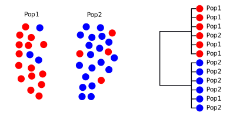
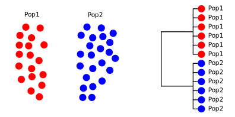
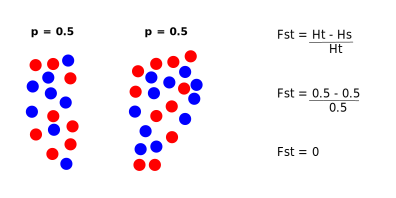
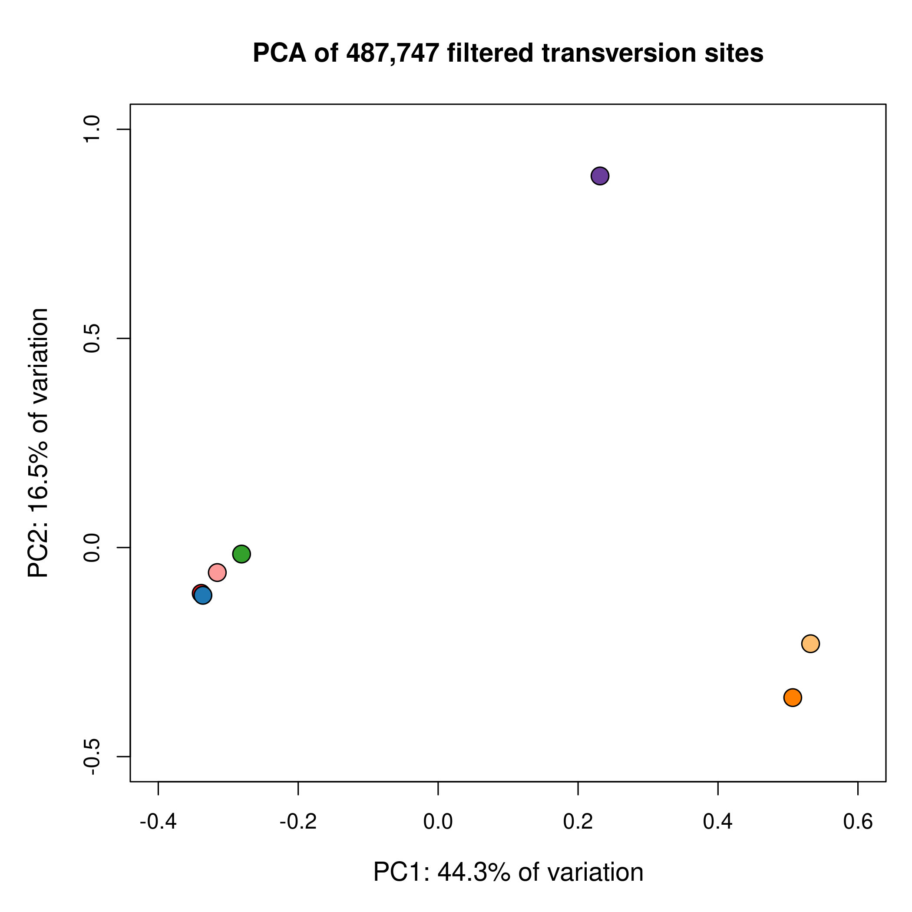
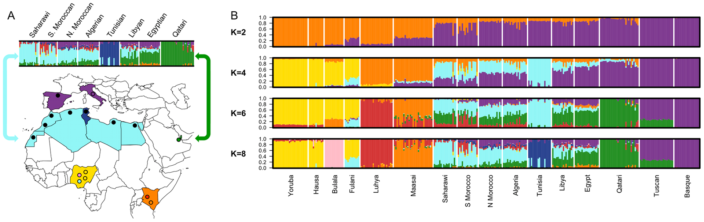
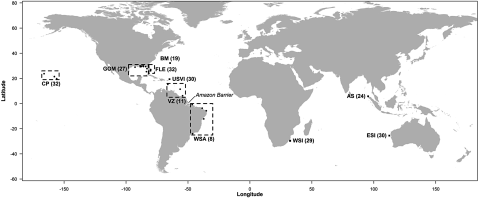
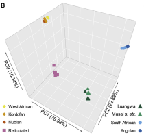

Population structure
BNS-2002: Genes, Development, and Evolution
Dr Axel Barlow
email: a.barlow@bangor.ac.uk
Phylogenetics and population genetics lectures
- Key concepts and Single locus phylogenetics
- Multi-locus phylogenetics
- Population structure
- Theory
- Methods
- Discoveries
- Conservation genetics
How does the tree form: lineage sorting

How does the tree form: lineage sorting

How does the tree form: lineage sorting

How does the tree form: lineage sorting

How does the tree form: lineage sorting

Population structure
- Phylogenetic approaches less suited to recent population divergence events
- Insufficient time for lineage sorting
- After population isolation, allele frequencies in subpopulations will diverge under drift
- Differences in allele frequencies provide a way of identifying populations and measuring their divergence
- The extent of structuring depends on the magnitude of drift and gene flow
- Structure can still persist with low level gene flow
Simulator
Why is it important?
Populations play a central role in:
- Evolution
- Ecology
- Conservation
We need to know:
- How many populations there are
- Where do they occur spatially
- How divergent are they
- Do they exchange migrants
Population structure - methods
Getting the data
Data is almost always multilocus. Many approaches have been and gone
- RAPDs
- RFLPs
- AFLPs
- Microsatellites
Current methods are all single nucleotide polymorphism (SNP) based
- RADseq
- SNP array capture
- Whole genome resequencing
Fst
Ht = expected* heterozygosity in total population
Hs = average expected* heterozygosity within subpopulations
*under HWE expectations
Fst = Ht - Hs / Ht
- Based on allele frequencies
- Measures change in expected heterozygosity for subpopulations vs a single (big) population
- Ranges from 0 (no subpopulations) to 1 (subpopulations fixed for different alleles)
- Indicates proportion of total variation structured between subpopulations
- Also useful for detecting selection
Fst

Fst
Fst
Principal components analysis (PCA)
- used for decades, modern implementation introduced in 2006
- Analysis of individuals
- Used allele variance relative to average
- model free (does not assume populations)
- Input is individual genotypes
- PCA find a single continuous variable that explains largest proportion of the variation (PC1)
- PC2 explains largest proportion not explained by PC1, etc...
- Allows exploration of where the populations are

STRUCTURE
- Introduced in 2000
- NGSadmix is STRUCTURE adapted for whole genome data
- User tells program the number of populations (K)
- Input is individual genotypes
- STRUCTURE assigns individuals to K populations maximising Hardy-Weinberg and linkage equillibrium
- Also allows individuals to be admixed
- Major challenge is determining K: either need strong prior knowledge, or test a range
STRUCTURE example

Population structure: discoveries
Hooded and carrion crows


Genome-wide Fst
Crow reading
Leopards
- Most widely distributed big cat
- Fossil record indicates African origin
- No range wide population genetics study
- 26 museum and modern genomes
- 8 subspecies, more or less supported by mtDNA
- African plus 7 Asian subspecies


Leopards

Leopards

Leopard reading
Tiger sharks
- Oceanic shark
- Apex predator, ecologically flexible
- Global distribution
- Some show seasonal migration
- Can move 1000's km

Tiger sharks


Tiger shark reading
Giraffes
- Confused subspecies taxonomy
- Nine subspecies more or less accepted
- Overall listed as vulnerable by IUCN
- Some subspecies are critically endangered
_male_(7068054987),_crop_&_edit.jpg)
Four giraffe species?
Four giraffe species?
Giraffes


Giraffes

Giraffes

Giraffe reading
Next time
Conservation genetics